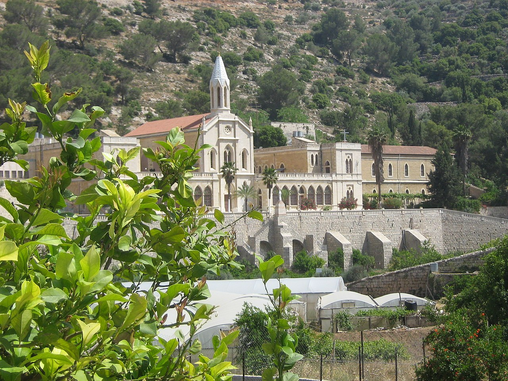

برك سليمان
أحد أبرز المعالم الأثرية في مدينة بيت لحم، وهي عبارة عن ثلاث برك مائية انشأهم السلطان العثماني سليمان القانوني في قرية أرطاس جنوب مدينة بيت لحم في القرن السادس عشر. ويحيط بهذه البرك أعين ماء تصب في هذه البرك، وكانت هذه البرك المائية في السابق من أهم مصادر المياه لمدينتي بيت لحم والقدس. أما اليوم فتعتبر واحدة من المعالم السياحية البارزة في مديمة بيت لحم والتي يقصدها أعداد كبيرة من السياح. وبجانب هذه البرك يقع العديد من اماكن الجلوس وألعاب الأطفال المميزة والمسلية.
اضغط للذهاب الى الموقع على الخريطة
دير مار سابا
دير مار سابا هو أقدم دير في الأراضي المقدسة، إذ يعود تاريخه إلى القرن الخامس الميلادي، وهو دير يوناني أرثدوكسي. ولم تمر فترة في التاريخ لم يكن فيها مأهولا، إذ عاش فيه آلاف الرهبان عبر العصور والقرون، وقد تم الاعتناء بالمبنى خلال العقود ولذلك بقي على حاله ولم يتغير فيه شيء. ويجب الأخذ بعين الاعتبار بأن الدخول إلى الدير يسمح للرجال فقط وبتحديد موعد مُسبق، ويمكن للنساء الانتظار في الخارج والتمتع بالتفاصيل المعمارية المذهلة للمباني التي تشكل هذا الدير.
اضغط للذهاب الى الموقع على الخريطة

دير ارطاس
يقع دير أرطاس بالقرب من برك سليمان، وقد بني هذا الدير المذهل في العام 1894 على يد المنظمة الإيطالية لراهبات مار يوسف. ويعتقد أن الوادي الذي بني فيه هذا الدير هو المكان الذي كتب فيه الملك سليمان الأشعار والقصائد لحبيبته. ويوجد في هذا الدير متحف رائع يروي تاريخ القرية والحصارات التي مرت عليها عبر التاريخ، كما ويوجد فيه مركز تعليمي مخصص للسكان المحليين.
اضغط للذهاب الى الموقع على الخريطة